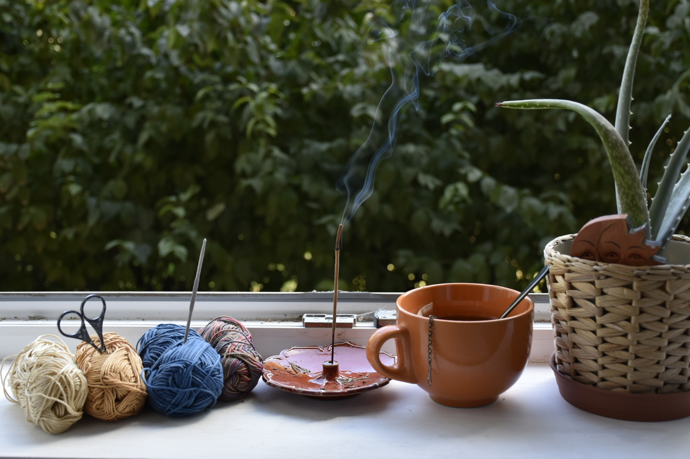

Sunsara

Számomra a horgolás egyfajta relaxáció, nyugalom ebben a rohanó világban. Imádom, ahogy egy gombolyagból megszületik a kezemben egy tárgy, legyen az egy mandala vagy egy kesztyű. Szeretem a színeket kombinálni, a kedvenceim a színátmenetes fonalak, mert azokkal a legizgalmasabb számomra a horgolás. Mielőtt megkezdem az alkotást, gyújtok egy füstölőt, főzök egy finom teát, és elindítok egy hangulatomhoz illő zenét.
A természet a második otthonom, belőle inspirálódom, szívom magamba az éltető energiát. Szeretem keresgélni, megtalálni és megörökíteni a természet apró csodáit, kincseit. A természetfotózás az én másik nagy szenvedélyem.